Roll 01 · 35mm · spring
YOSEMITE
Two rolls through the valley in one weekend: granite, meltwater, and the crowds that come with them. Scanned straight off the negatives, light leaks included.
Scroll to advance the roll sideways.
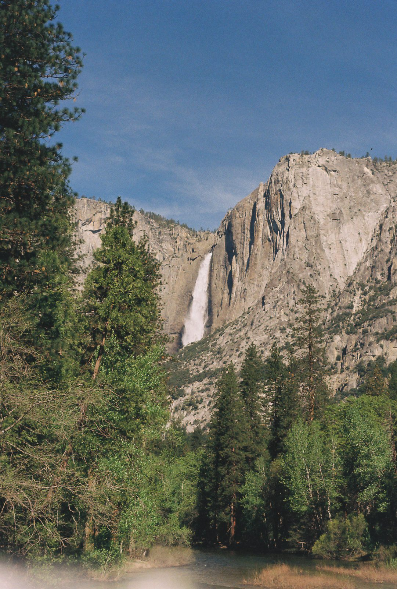


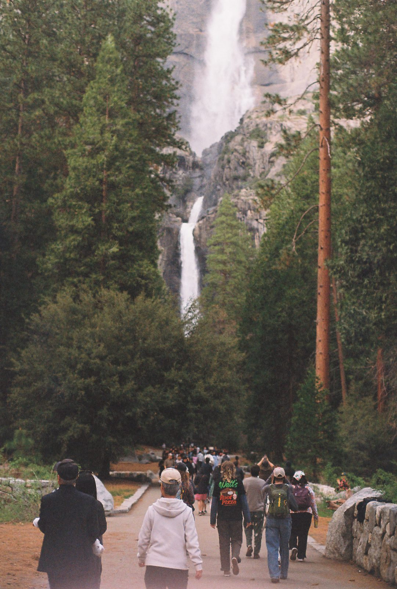
THE CONTACT SHEET
Fifteen keepers from both rolls.
Click any frame to view it full size.
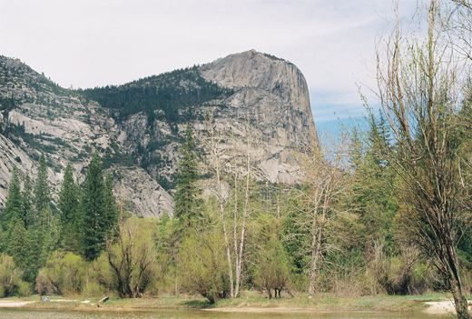
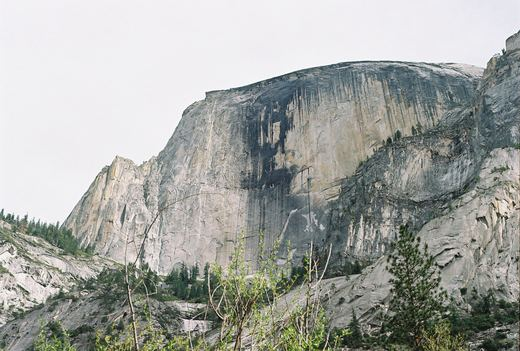
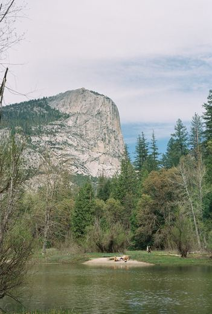
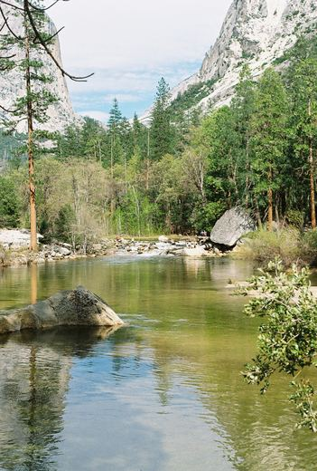
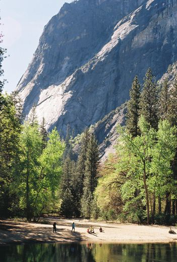
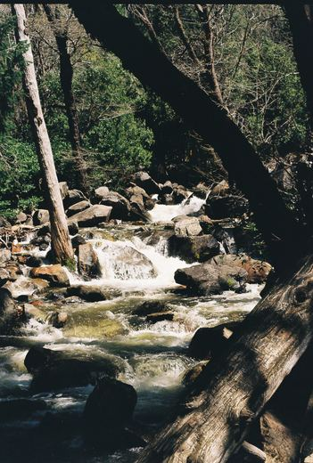
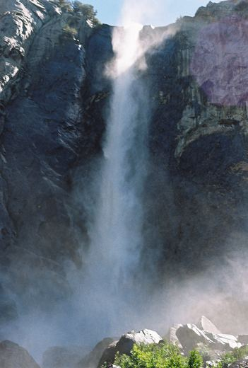
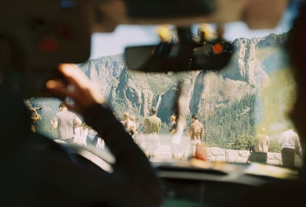
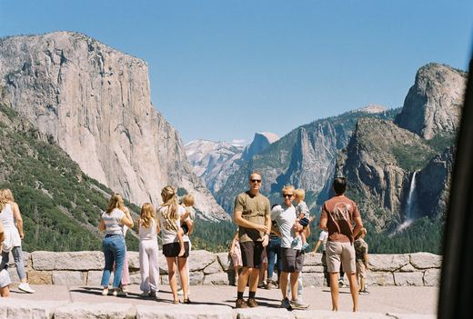
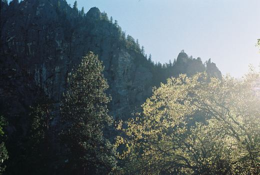
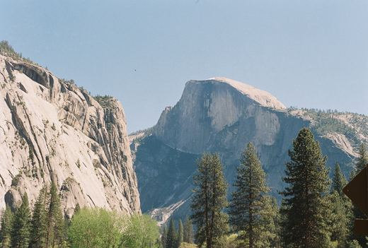
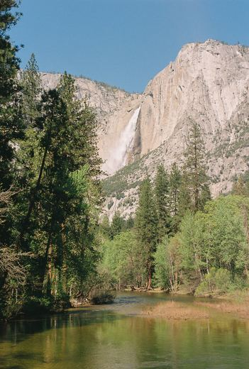
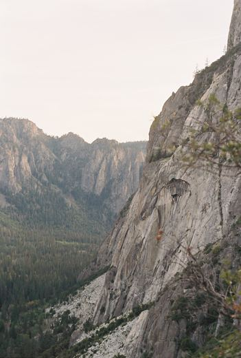